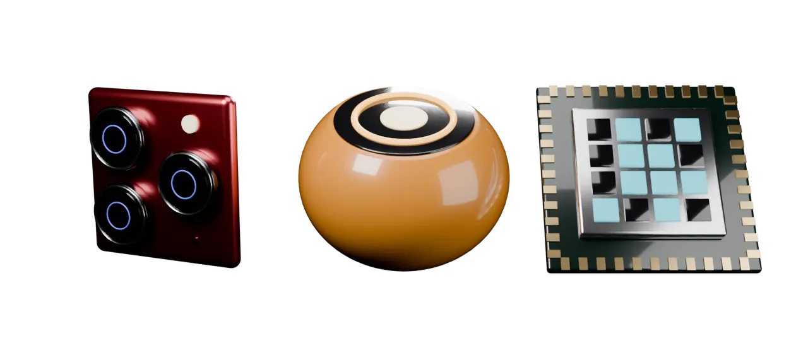
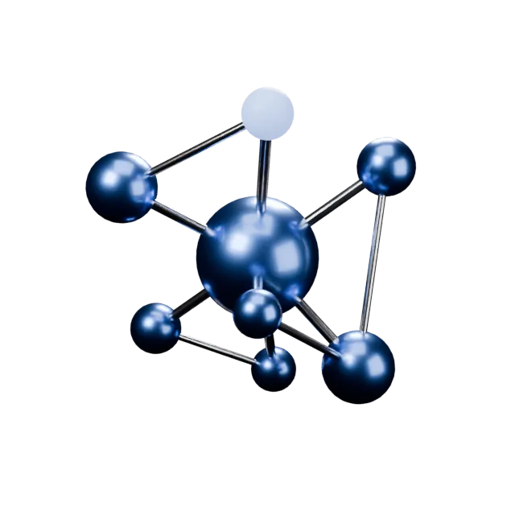
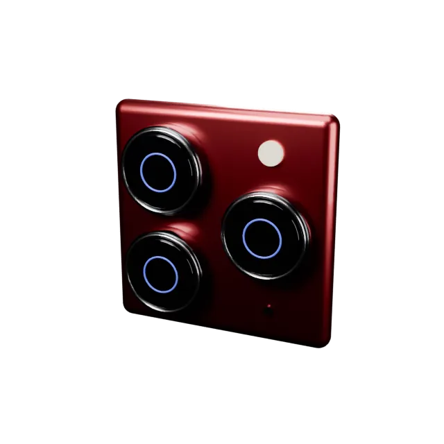
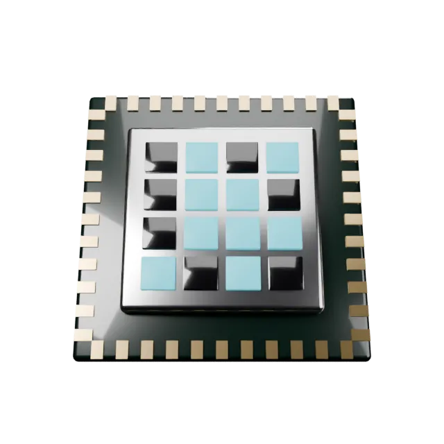

Istiqlal AurangzebAI Engineer
AI that sees, listens, and runs other AIs.

- Sees
- Listens
- Runs other AIs
412 PRs merged in under 8 months.
AI engineer at an AI venture studio who ships production AI end to end: a vision-powered home inventory for insurance claims, a voice assistant with long-term memory, and a multi-tenant platform for AI agents.
412
PRs merged
In under 8 months of production work.
Prologue: Carbon on the Chain
Research roots: a building's carbon footprint, made tamper-proof.
It started in construction research: carbon accounting for buildings, with material data pulled from Revit BIM models and the results written to Ethereum so no one could quietly edit them.
- Tamper-proof carbon records.
- Procurement that survives real costs.
- commits
- 118

Drag to turnNights, Notebooks, Prototypes
After a silent summer, the commit graph lights up with hands-on AI builds.
A Graph-RAG chatbot over a raw email archive, an LLM parser for purchase-order emails, an IoT rig with live anomaly detection.
17
repositories
Hands-on prototypes, built to learn.
- Questions answered over a raw email archive.
- Purchase-order emails turned into structured, de-duplicated records automatically, with Gemini doing the parsing.
- Sensor anomalies flagged live.
- commits
- 477
A Voice That Remembers
First production role: a voice-first AI assistant with long-term memory.
The first production product: a voice assistant that remembers, moved from GPT-4o Realtime to Gemini Live and given pgvector recall, multimodal memory and an LLM-maintained wiki. Then the unglamorous half that makes it real: on-device iOS speech, a cold-start microphone fix, production errors traced through server logs.
~1.5s to ~0.3s
audio flush threshold
Snappier voice replies.
Audio flush threshold cut from ~1.5s to ~0.3s with the move to Gemini Live.
- An assistant that remembers what it heard and saw.
- Conversations become a living knowledge base.
- lines added
- 65K+
- PRs merged
- 51
- commits
- 689

Drag to turnEyes on Every Object
The biggest build: a computer-vision home-inventory product for insurance claims.
Photograph a room; get back an itemised, priced inventory ready for an insurance claim. Built the two-pass vision pipeline at its core and judged every fix against human-labelled photos, not eyeballs.
1 to 11
items found
Full inventories from a single photo.
On a real claims photo, items found went from 1 to 11 with a detect-then-identify vision pipeline that reads each object from a full-resolution crop.
~60s to ~5s
per item
Prices in seconds, not a minute.
Projected in the PR at ~5s per item, down from ~60s, via a parallel retail-search fan-out with LLM ranking and a deterministic median.
- Counts you can trust, proven on held-out data.
- lines added
- 147K+
- PRs merged
- 152
- commits
- 1,301
Rebuilt for the Cloud
The same product, re-platformed AWS-native in a single sprint.
The same product, rebuilt AWS-native: LLM work on SQS workers streaming progress over SSE, Terraform on a shared EKS cluster, migrations as a Kubernetes Job before every rollout. An architecture review closed with workers that stay correct under at-least-once delivery.
~25k
lines of architecture fixes
Correct under at-least-once delivery.
Idempotent worker callbacks and a closed worker-to-database back door, across ~25k lines of architecture fixes.
- Long LLM jobs no longer block requests.
- Repeatable infrastructure.
- PRs merged
- 49
- lines added
- 23K+
- commits
- 342
Agents That Listen
Turning meetings into agent memory — without leaking a word.
Feed an organisation's meetings to its AI agents without building a surveillance machine. Deny-by-default ingest, per-person OAuth with no meeting content stored, and a knowledge graph built from what was said.
176
tests against the real tenant boundary
Routing users can actually set up.
A rules-first engine with signed webhooks and a durable outbox, backed by 176 tests against the real tenant boundary.
- No meeting reaches an agent unless approved.
- Each person controls their own meeting data.
- PRs merged
- 44
- lines added
- 44K+
- commits
- 360

Drag to turnAn Operating System for Agents
A multi-tenant platform where every workspace gets its own team of AI agents.
A multi-tenant platform that provisions a private team of AI agents for every workspace on Kubernetes: control plane, rosters, skill allowlists, owner-approved tasks. The hard parts were distributed-systems parts, from fencing stale queue messages to hot-adding agents without a gateway restart.
394
tests, 110 of them lifecycle cases
Stale queue messages can no longer touch a replacement workspace.
Provisioning fenced with instance and operation IDs, terminal failures no longer retried forever — backed by 394 tests, 110 of them lifecycle cases.
- Any company can sign up and get its own agent team.
- PRs merged
- 116
- lines added
- 129K+
- commits
- 128
One more thing.
Got a fix merged upstream into an open-source agent runtime.
Managed coding-CLI runtime bump and regenerated protocol schemas.
The pattern repeats across all of it.
- Measure before claiming.Held-out evals, concurrency benchmarks.
- Migrate in stages instead of big-bang cutovers.
- Treat idempotency and concurrency as product features.
What it adds up to.
- PRs merged
- 412
- lines added
- 410K+
- commits
- 3,415
- months in prod
- 9
197 commits are co-authored with AI coding agents: AI, built with AI.
Shipping AI that has to work in production? Start with the code.
See the code on GitHub- istiqlalbhatPublic GitHub profile README, rebuilt as a terminal session.
- portfolioPublic personal portfolio site.
- evil-llmAn open LLM steered by pushing two neurons, with a live 3D map of the effect.
- revit-agenticAn AI agent for Autodesk Revit.
Istiqlal Aurangzeb, AI Engineer. Every number on these slides is computed from public and private GitHub history; private work is described without names.